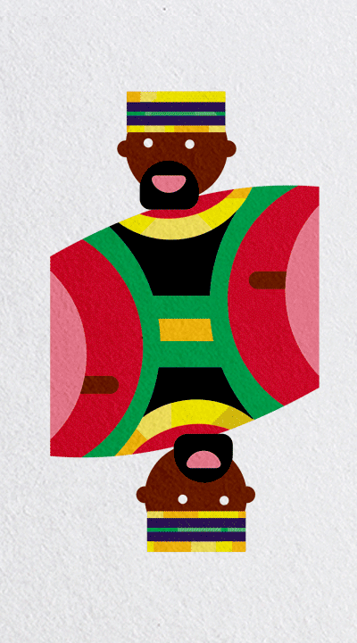
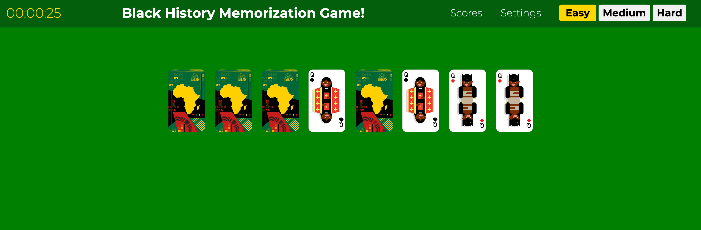
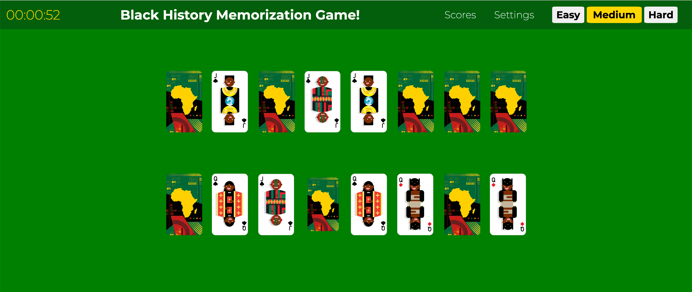
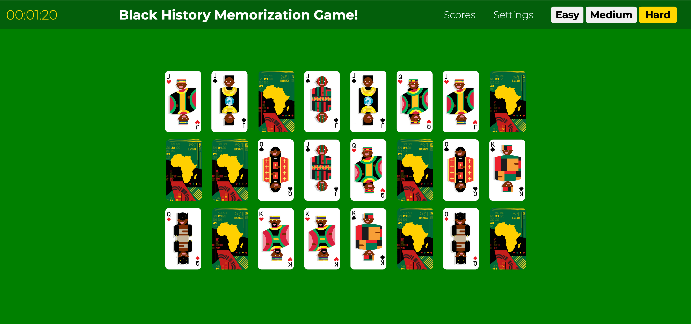
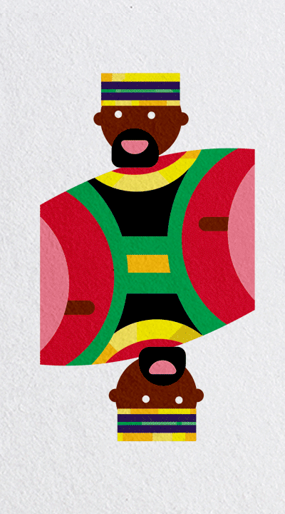
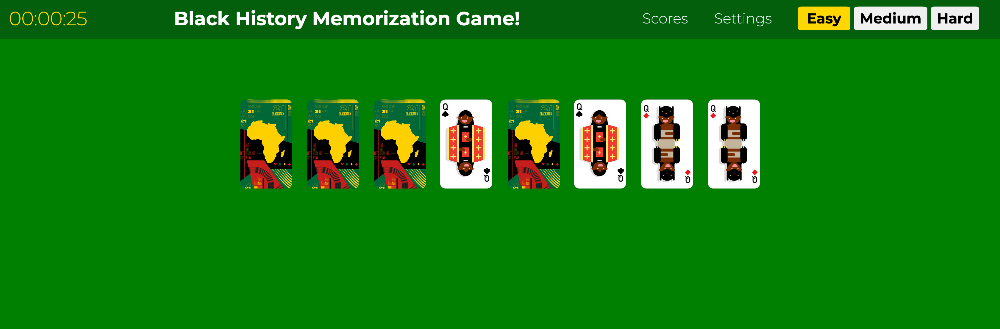
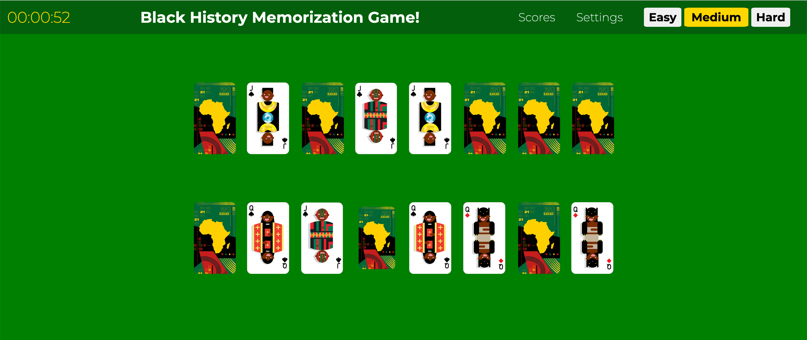
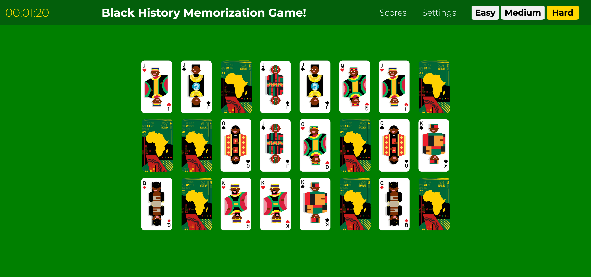

About
This game was created to educate and amplify the history of the african disapora beyond the scope of the african-american context. The illustrations reflect a myriad of peoples throughout the history, reflecting various cultures and periods. Representation and diversity are an import part of inclusion and establishing more accepting and tolerant society.
Future Content
An additional feature to be included for educational purposes are modules to show facts relating to the particular group that has matched. For increased diffuclty, including a counter to measure the amount of moves taken per turn may be added.
Role: Conception, Ideation, UI, Usability Testing
Design Tools: Adobe Illustrator
Languages: HTML/CSS/JavaScript
Frameworks: jQuery
Deployment: Github pages
Black History Memorization Game
This site is currently in Work In Progress

 






